Explore Morelia
A Brief History
Morelia, formerly Valladolid, preserves sixteenth-century Michoacán cathedral and pink-stone civic buildings from colonial and independence periods. Aqueduct, plazas, and university cloisters record how Spanish planners adapted a Tarascan region capital. Aqueduct arcades and Tarascan craft villages extend Michoacán cathedral skylines across the central plateau.
Attractions Map
Top Sights & Activities
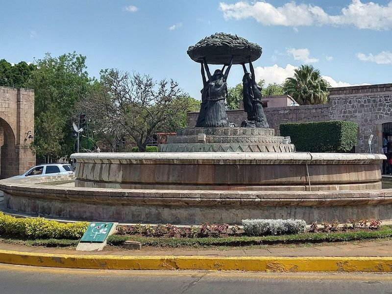
Fuente de las Tarascas
The Fuente de las Tarascas is an exquisite bronze fountain depicting three women supporting a fruit bowl, crafted by José Luis Padilla Retana in 1984. A popular attraction and city landmark in Morelia, it is sometimes referred to as the fountain of the naked women. Visitors can take photographs by the fountain or the large 'Morelia' letters nearby, and also enjoy a delicious meal or catch a bus downtown from this location.
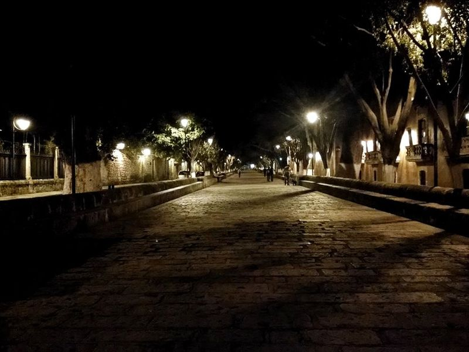
Calzada Fray Antonio
Calzada Fray Antonio is listed among principal sites for Morelia within Mexico. Municipal and regional heritage listings document its place in the historic centre and travellers routes through Morelia. Calzada Fray Antonio is listed among principal sites for Morelia within Mexico.
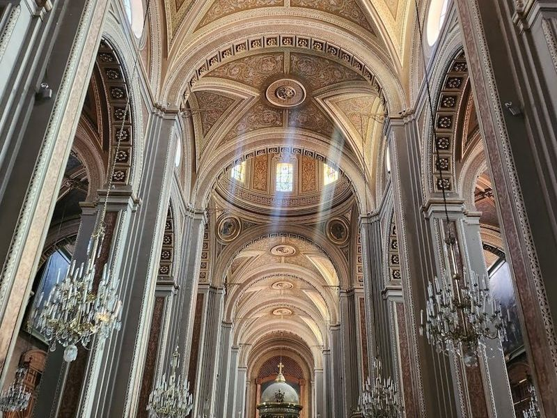
Catedral de Morelia
Catedral de Morelia, a Baroque Roman Catholic cathedral, is a landmark in the heart of Morelia. Its pink stone facade and towering presence make it an part of the city's skyline. The cathedral's construction spanned almost a century, resulting in a mix of architectural styles that add to its unique charm.
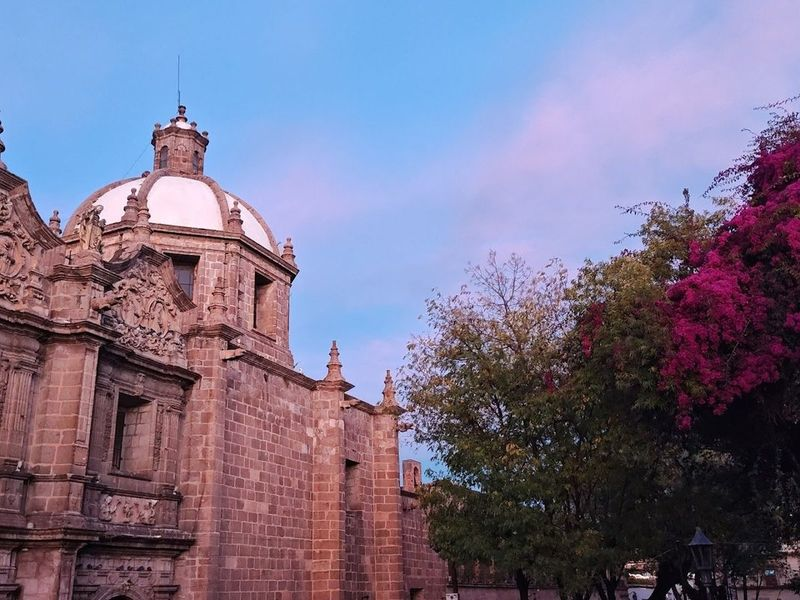
Jardín de las Rosas
Jardín de las Rosas is a delightful garden surrounded by historic buildings, offering a tranquil escape in the city. The area features tended gardens, shade trees, and a stone fountain, creating a serene atmosphere for visitors to enjoy. This charming public square is perfect for leisurely strolls or picnics amidst blooming roses.
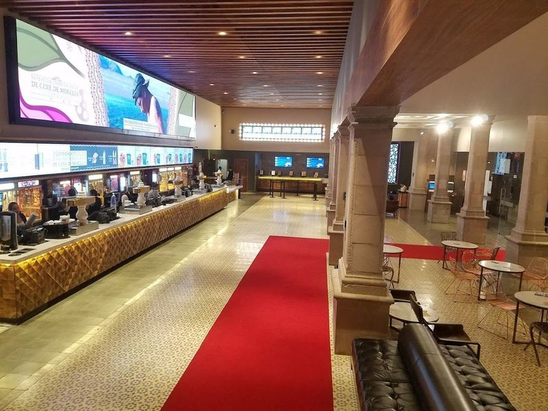
Cinépolis Morelia Centro
Cinépolis Morelia Centro is a movie theater chain that offers top-notch sound and projection technology. It provides a classic Cinépolis experience with luxurious seating and exceptional service, making it a great place to catch your favorite flicks while on vacation. The cinema is In the city, allowing visitors to explore other nearby attractions after watching a movie.
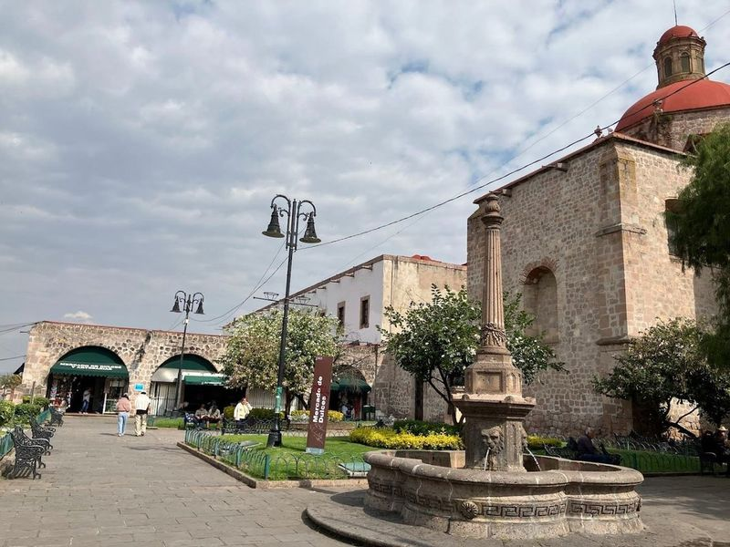
Mercado de Dulces y Artesanías
Nestled just a short stroll from the bustling plaza, the Mercado de Dulces y Artesanías is a must-visit destination for anyone exploring Morelia. This covered market is brimming with stalls that offer an array of local sweets and traditional handicrafts, making it the perfect spot to find unique souvenirs. Indulge your taste buds with regional delights like ate, a sweet fruit paste, and cajeta, a rich caramel made from goat's milk.
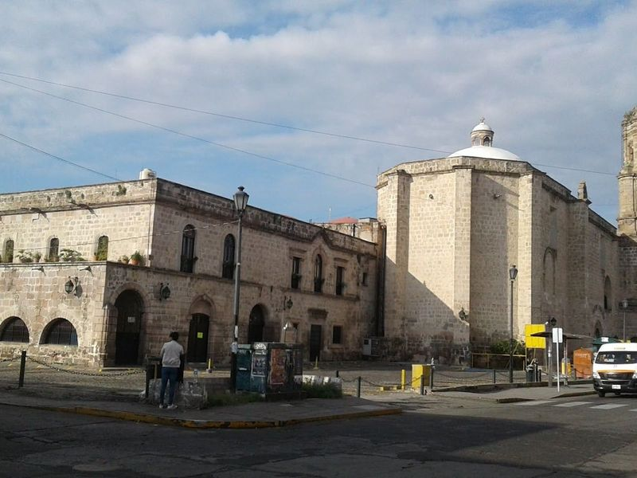
Templo de San Francisco de Asís
The Templo de San Francisco de Asís is a 16th-century religious complex that showcases exquisite Plateresque architecture on its facade and a lavishly adorned interior. Known as one of the oldest churches in Morelia, it features the region's characteristic pink stone and boasts a charming square with a fountain right in front. This site is perfect for art enthusiasts, culture seekers, or anyone interested in vintage artifacts.
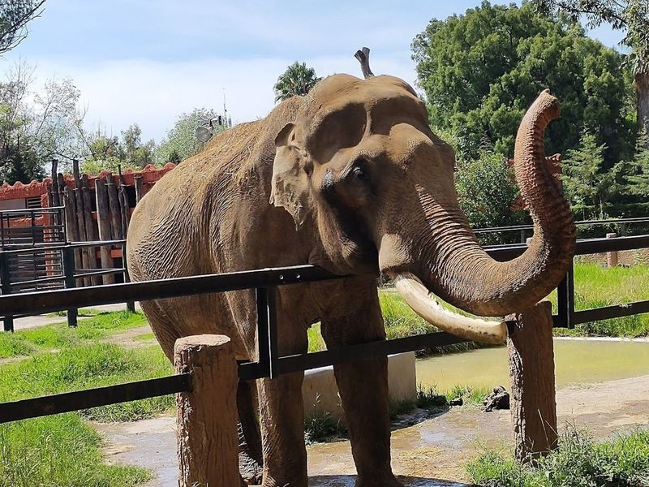
Parque Zoológico Benito Juárez
Located in Morelia, Mexico, the Parque Zoológico Benito Juárez is a popular attraction for families. Established in 1970 and named after Mexican President Benito Juarez, the zoo is home to a diverse collection of animals including giraffes, bears, tigers, monkeys, zebras and more. With over 530 different species on display, it is zoos in Mexico.
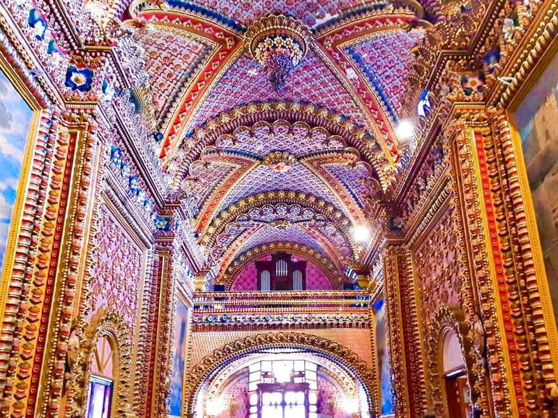
Templo de San Diego
Nieve de San Diego, also known as the Shrine of Lady Of Guadalupe, is a chapel located in Morelia. This 16th-century cathedral is adorned with floral decor and incredible warm-toned paintings throughout its interior. The church's architecture features detailed murals and flowers on every aspect, from the doors to the ceilings and columns.
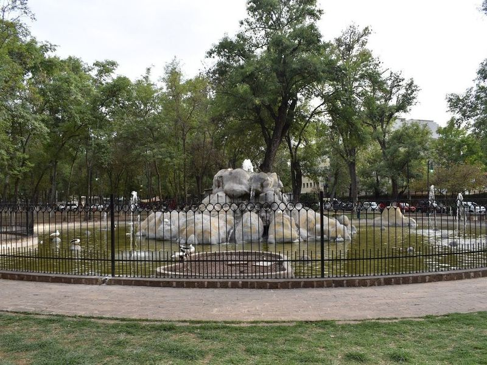
Bosque Cuauhtémoc
Bosque Cuauhtémoc is a popular green space in Morelia, offering paths, playgrounds, and two small museums. The park features various plazas like Plaza de Armas and Plaza Juarez. While it may not be the largest park, it provides a glimpse of local life and occasional wildlife sightings like hummingbirds. Nature enthusiasts can explore the zoo, Bosque Cuauhtemoc park, and Orquidario garden.
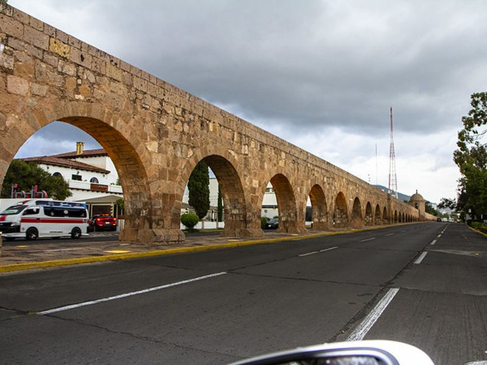
Acueducto de Morelia
Acueducto de Morelia is listed among principal sites for Morelia within Mexico. Municipal and regional heritage listings document its place in the historic centre and travellers routes through Morelia. Acueducto de Morelia is listed among principal sites for Morelia within Mexico.